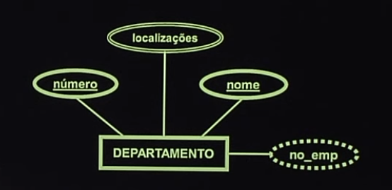
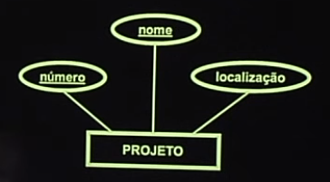
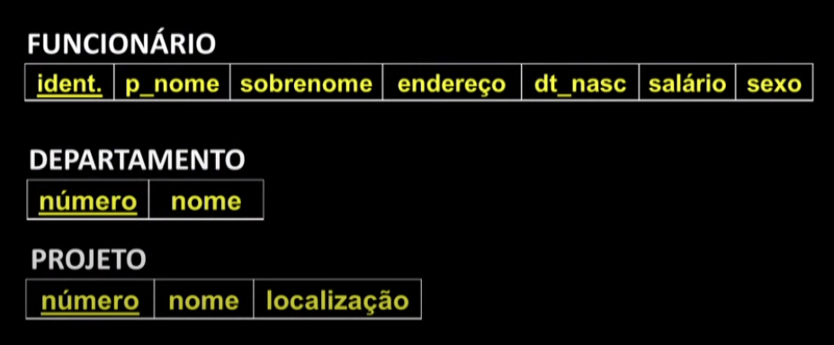
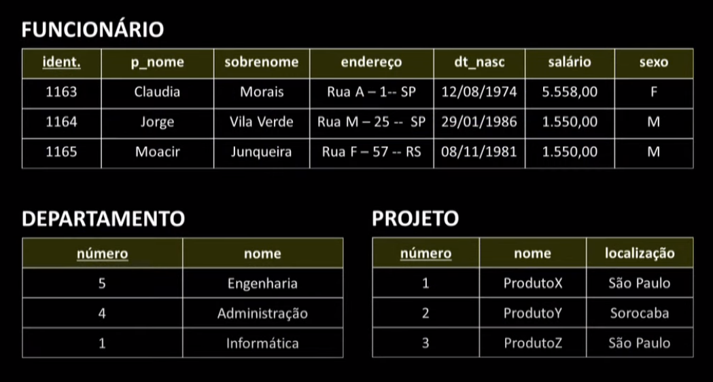
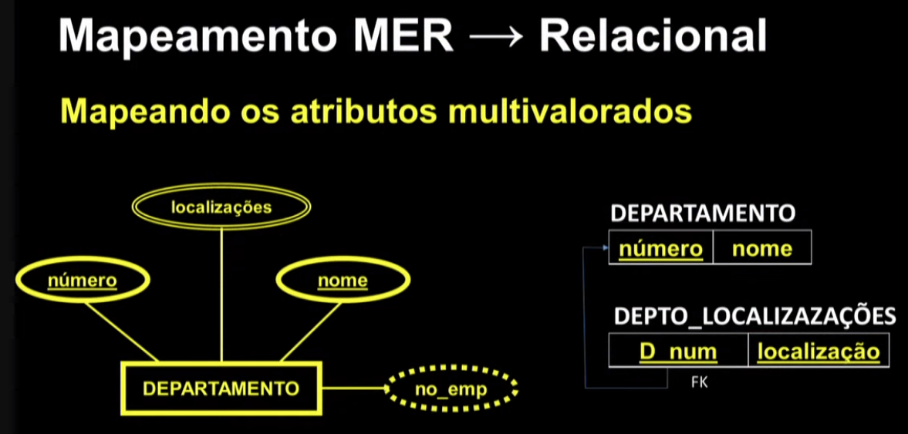
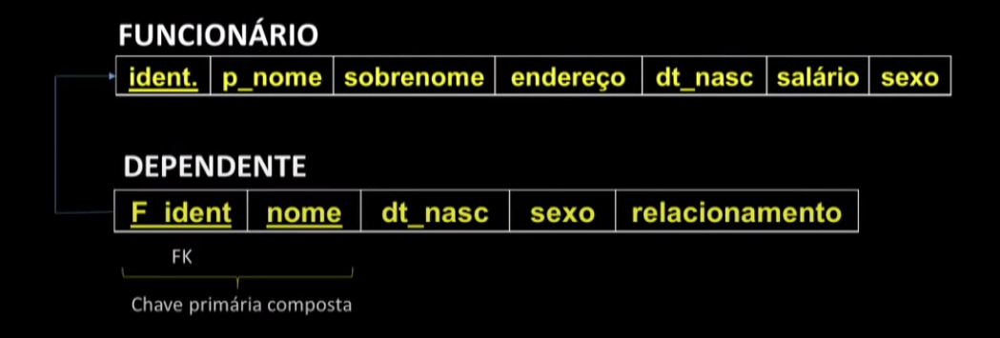
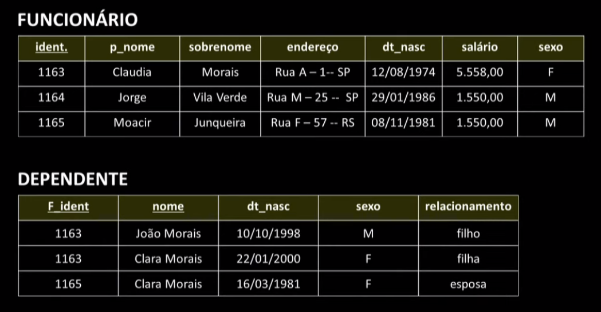
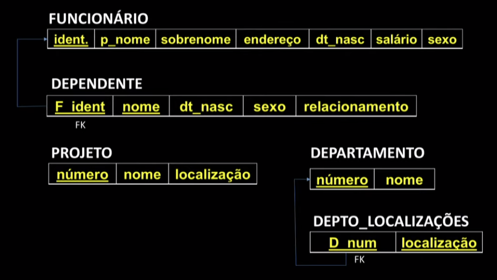

Disciplinas
-
BANCO DE DADOS-T01-2024-1 Concluído
Materiais
Vídeo 2 - Bancos de Dados - Aula 06 – Mapeamento MER → Relacional - Parte I: entidades, atributos, chaves. sendProfessor ministrante: Sarajane Peres.
Conteúdo
Mapeamento MER → Relacional.
Entidades, atributos, chaves.
Mapeamento:
Uma forma de projetar um esquema de um banco de dados relacional (um projeto lógico) tendo como base o esquema de um projeto conceitual.
Ao implementarmos o projeto lógico no SGBD teremos garantidas algumas restrições que devem ser impostas aos dados.
Exemplo:
- Restrições de domínio.
- Restrições de chave.
- Restrições de integridade referencial (chave estrangeira).
Mapeando tipos entidade fortes (ou regulares):
- para cada tipo entidade forte em um MER é criada uma relação no modelo Relacional;
- essa relação inclui todos os atributos simples, e os componentes simples dos atributos compostos, do tipo entidade forte;
- um atributo chave da entidade é escolhido como chave primária para a relação recém criada.
FUNCIONÁRIO:
DEPARTAMENTO:
Relação:

PROJETO:
Relação:
 Estrutura:  Mapeando os atributos multivalorados:- Para cada um desses atributos é preciso criar uma nova relação.
- Essa relação incluirá um atributo A correspondente ao atributo multivalorado, mais o atributo chave primária K da relação que representa o tipo entidade no qual o atributo multivalorado foi especificado;
- O atributo K será uma chave estrangeira na nova relação;
- A chave primária dessa nova relação será a combinação dos atributos Ae K.
Exemplo:
 Tabelas já estanciadas.
Mapeando tipos entidade fracas.
- Para cada tipo entidade fraca em um MER é criada uma relação no modelo Relacional;
- Essa relação inclui todos os atributos simples, e os componentes simples dos atributos compostos, do tipo entidade fraca; e inclui como atributo chave estrangeira, a chave da entidade forte associada à entidade fraca;
- A chave primária da relação criada é a combinação do atributo chave da entidade forte com o atributo chave parcial da entidade fraca.
DEPENDENTE:
Relação:
 Ex:Dados armazenados na tabela.
Mapeamento:
Estes slides estão baseados na bibliografia:
Modelo Entidade-Relacionamento (MER) Parte I: entidades, atributos, chaves.